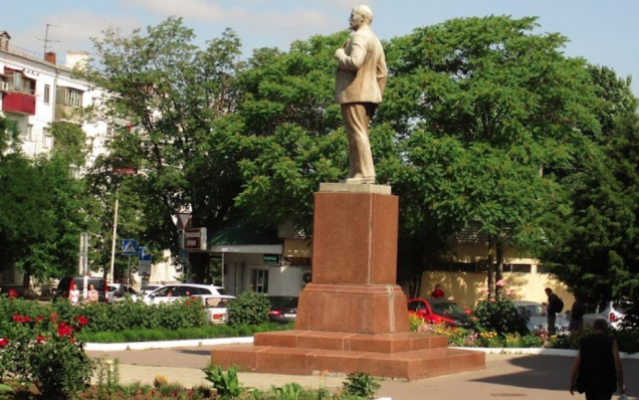

Совместные поездки в Краснодар и Пятигорск
Ежедневные поездки на комфортабельном автомобиле по самым низким ценам
Выбрать поездкуЗабронируйте поездку сейчас и получите скидку 16%
6 причин воспользоваться нашим трансфером
-

На 45% доступней По сравнению с автобусами и электричками
-

Комфортно В комфорте, с остановками на перекус и в туалет
-

Надёжно Забронированная поездка 100% состоится
-

Безопасно Профессиональные водители и проверенный маршрут
-

Весело и интересно Можем обсудить интересные темы и поддержать разговор
-

В дорогу без очередей От заявки на сайте до места назначения всего два клика
Расписание поездок
Две поездки осуществляются ежедневно!
-
Пятигорск - Краснодар
Место отправления:
Макдоналдс (проспект Калинина, 2)- Время отправления: 7:00
- Время прибытия: 13:00
-
Краснодар - Пятигорск
Место отправления:

ЖД вокзал Краснодар-1 (Привокзальная площадь)- Время отправления: 15:00
- Время прибытия: 21:00
Наши автомобили
-

Kia Carnival
Этот микроавтобус одновременно относится к категории микроавтобусов и кроссвэнов. В салоне оборудовано 7 мест для пассажиров. Мощный двигатель объёмом в 3.5 литра работают в паре с 8-ступенчатой автоматической коробкой передач. За безопасность отвечают интеллектуальные системы и ассистенты. Моргнуть не успеете, как доедем до пункта назначения.
-

Volkswagen Multivan
Почти что бэт-мобиль! Современное оснащение – присутствует цифровая приборная панель, адаптивный круиз-контроль, парковочный автопилот и много других технологий. В автомобиле очень хороший уровень акустического комфорта. Это было достигнуто благодаря применению звукоизолирующих материалов. В пути вы сможете выспаться и не переживать о безопасности.
-
Peugeot Traveller I Long
Микроавтобус созданный для путешествий всей семьёй. Машина предоставляет большое пространство для комфорта и приятных впечатлений от каждой поездки. Машина обладает современным технологичным оснащением. Для авто добавлена система автоматического управления светом фар, проекционный дисплей и ассистенты безопасности.
-

Hyundai H-1
Высокий уровень безопасности обеспечивается современными технологиями – ESP следит за курсовой устойчивостью, а другие ассистенты помогают в процессе движения на средней скорости. Радиус поворота этого транспорта составляет 5.6 метров, что даёт возможность легко разворачиваться на узкой улице. Для задних и передних колёс установлены большие и мощные дисковые тормоза, которые обеспечивают стабильное снижение скорости. Салон радует вместительностью – для посадки доступно 8 мягких и удобных мест.
Приглашаем опытных водителей на работу
Требования к водителям:- Наличие автомобиля Lada Largus, либо любой другой автомобиль с посадочными местами для пассажиров от пяти и более.
- Отличное состояние автомобиля.
- Опыт вождения от 3х лет. Прописка в г. Краснодар или в городах КМВ.
- Гарантируем высокую заработную плату, при условии усердия и профессионализма с вашей стороны.
Отзывы наших попутчиков

Юрий, Веб-разработчик из г. Краснодар
“Об этом сервисе я узнал от своего соседа, который тоже частенько мотается к маме в Пятигорск. Я был приятно удивлён ценой. В поездке часто останавливаемся, если есть необходимость, иногда болтаем. Если вы до сих пор переплачиваете за поездки на электричке или автобусах - рекомендую Пегас! Они классные!!”

Диана Санчес, Бариста из кофейни “Сыбракс”.
“Свободно и удобно. Главное заранее бронировать место, а то в прошлый раз мы не успели свои любимые места забить. В остальном всё на пять баллов. Рекомендую!”

Андрей, Фотограф и Пятигорска.
“Пегас выручает. Гораздо быстрей чем на автобусе. Пожалуй больше никогда на вонючем автобусе не поеду. Хватит с меня. Хорошо что есть Пегас-трансфер!”

Святослав, Программист из компании “Горячка”.
“На дворе 21 век, а мы еще не летаем. Хотя когда мы ехали с водителем по имени Михаил - подумал что летим! Он шустрый малый, и при этом было совсем не страшно. Сразу видно - профессионал!”

Женя, Предприниматель из г. Москва.
“Передо мной стояла задача - довезти очень хрупкие коллекционные фигурки в Пятигорск. Очень боялся, что в автобусе их сломают. Воспользовался трансфером Пегас и всё прошло гладко. Рекомендую всем.”
Ежедневный трансфер из Краснодара в Пятигорск и обратно
Совершаем совместные поездки на автомобилях каждый день. Два маршрута: Краснодар - Пятигорск и Пятигорск - Краснодар.
Пегас-трансфер — современный и доступный сервис для совместных поездок. У нас работают профессиональные водители со стажем вождения не менее 5-ти лет!. При необходимости вы можете ознакомиться с карточкой водителя, который вас повезёт. Карточка водителя находится в автомобиле. В ней содержится информация о стаже, навыках вождения, учтены все совершённые поездки по нашим маршрутам. Даже список домашних животных, если таковые у него имеются. С Пегас-трансфер вы в полной безопасности.
Выгоды от совместных поездок:- Легкость путешествия Больше никаких пересадок и ожиданий на остановках. Под рукой всегда комфортабельный автомобиль.
- Безопасность Наши рейтинговые системы всегда подскажут вам наилучший выбор для вашего безопасного путешествия.
- Доступность Забронируйте машину по самой выгодной цене, на необходимую дату с нужными опциями.